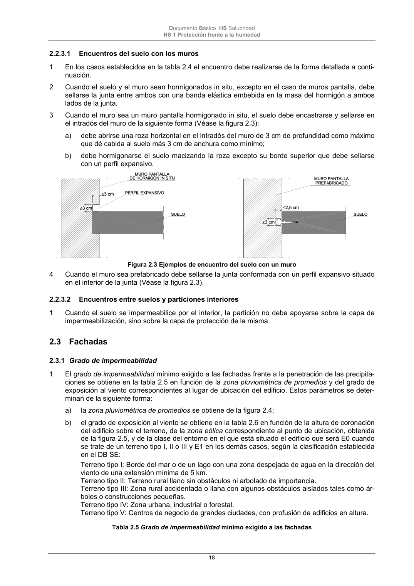

DB-HS Salubridad · edición 2022-06-14 · capa oficial
Documento DB-HS-oficial · SHA-256 del PDF 68df3caacc95f71aee2ec1ba7b2c65ae66155c21e3a8785521b8fdd4fd640d3b
Copia fiel del PDF fuente · Fuente oficial
Ficha de la disposición en la fuente oficial
Formatos: JSON del segmento · Markdown
2.3 Fachadas 2.3.1 Grado de impermeabilidad 2.3.1 Grado de impermeabilidad 1 El grado de impermeabilidad mínimo exigido a las fachadas frente a la penetración de las precipita- ciones se obtiene en la tabla 2.5 en función de la zona pluviométrica de promedios y del grado de exposición al viento correspondientes al lugar de ubicación del edificio. Estos parámetros se deter- minan de la siguiente forma: a) la zona pluviométrica de promedios se obtiene de la figura 2.4; b) el grado de exposición al viento se obtiene en la tabla 2.6 en función de la altura de coronación del edificio sobre el terreno, de la zona eólica correspondiente al punto de ubicación, obtenida de la figura 2.5, y de la clase del entorno en el que está situado el edificio que será E0 cuando se trate de un terreno tipo I, II o III y E1 en los demás casos, según la clasificación establecida en el DB SE: Terreno tipo I: Borde del mar o de un lago con una zona despejada de agua en la dirección del viento de una extensión mínima de 5 km. Terreno tipo II: Terreno rural llano sin obstáculos ni arbolado de importancia. Terreno tipo III: Zona rural accidentada o llana con algunos obstáculos aislados tales como ár- boles o construcciones pequeñas. Terreno tipo IV: Zona urbana, industrial o forestal. Terreno tipo V: Centros de negocio de grandes ciudades, con profusión de edificios en altura. Tabla 2.5 Grado de impermeabilidad mínimo exigido a las fachadas Documento Básico HS Salubridad HS 1 Protección frente a la humedad 19
